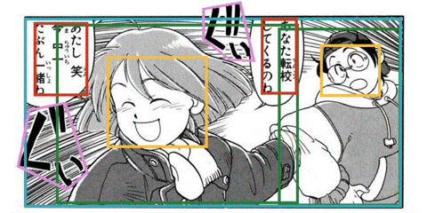
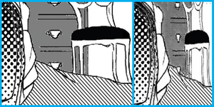

Minshan Xie谢敏珊Postdoctoral Fellow
Centre for Perceptual and Interactive Intelligence |
 |


Biography
She is currently a Postdoctoral Fellow at the Centre for Perceptual and Interactive Intelligence and an Honorary Postdoctoral Fellow at The Chinese University of Hong Kong (CUHK), under the supervision of Prof. Liwei Wang. Previously, she held a Postdoctoral Fellowship at CUHK, supervised by Prof. Tien-Tsin Wong.
She earned her Ph.D. in Computer Science and Engineering from CUHK, also under the supervision of Prof. Tien-Tsin Wong. Prior to that, she received her M.Phil. degree in Computer Science and Technology from South China University of Technology (SCUT) in 2018, supervised by Prof. Xuemiao Xu, and her B.Eng. degree in Software Engineering from SCUT in 2015.
Her research interests cover Image Processing, Computer Vision and Deep Learning, with a particular focus on supporting manga and anime production through deep learning technologies. She is currently working on Generative AI for content creation and diffusion models for image and video processing.
News!!!
[Mar. 2025]
One paper conditionally accepted to CVPR 2025.
[Jan. 2025]
Two papers conditionally accepted to EG 2025.
[Aug. 2024]
One paper conditionally accepted to SIGGRAPH Asia 2024.
[Mar. 2024]
One paper conditionally accepted to ICIP 2024.
[Mar. 2023]
One poster conditionally accepted to Vis 2023.
[Mar. 2022]
One paper accepted to TVCG.
[Mar. 2021]
One paper conditionally accepted to SIGGRAPH 2021.
[Mar. 2021]
One paper conditionally accepted to CVPR 2021.
[Aug. 2020]
One paper conditionally accepted to SIGGRAPH Asia 2020.
[Mar. 2019]
One paper accepted to TVCG.
[Aug. 2018]
She started her Ph.D study at CUHK.
Publications [Google Scholar]
|
 AppareKappore © Kanno Hirosh |
Advancing Manga Analysis: Comprehensive Segmentation Annotations for Manga109 dataset
Minshan Xie, Jian Lin, Hanyuan Liu, Chengze Li, Tien-Tsin Wong IEEE Conference on Computer Vision and Pattern Recognition (CVPR), 2025 [ Paper] [ Project ] |
|
 |
Screentone‐Preserved Manga Retargeting
Minshan Xie, Menghan Xia, Chengze Li, Xueting Liu, Tien-Tsin Wong In Eurographics 2025: the 46nd Annual Conference of the European Association for Computer Graphics Computer Graphics Forum, 2025 [ Paper] |
 |
Synchronized Multi‐Frame Diffusion for Temporally Consistent Video Stylization
Minshan Xie, Hanyuan Liu, Chengze Li, Tien-Tsin Wong In Eurographics 2025: the 46nd Annual Conference of the European Association for Computer Graphics Computer Graphics Forum, 2025 [ Paper] |

|
Text-guided texturing by synchronized multi-view diffusion
Yuxin Liu, Minshan Xie, Hanyuan Liu, Tien-Tsin Wong SIGGRAPH Asia, 2024 [ Paper] [ Code ] |
|
© ini_pmh |
Sketch2manga: Shaded manga screening from sketch with diffusion models
Jian Lin, Chengze Li, Xueting Liu, Minshan Xie, Tien-Tsin Wong IEEE International Conference on Image Processing (ICIP), 2024 [ Paper] [ Code ] |

|
A Learned Compact and Editable Light Field Representation
Menghan Xia, Jose Echevarria, Minshan Xie, Tien-Tsin Wong IEEE transactions on visualization and computer graphics (TVCG), 2022 [ Paper] [ Code ] |

|
Seamless Manga Inpainting with Semantics Awareness
Minshan Xie, Menghan Xia, Xueting Liu, Chengze Li, Tien-Tsin Wong ACM Transactions on Graphics (ACM TOG), SIGGRAPH, 2021, 40(4), 1-11. [ Project] [ Paper ] [ Code ] |

|
Exploiting Aliasing for Manga Restoration
Minshan Xie*, Menghan Xia*, Tien-Tsin Wong IEEE Conference on Computer Vision and Pattern Recognition (CVPR), pp. 13405-13414. 2021. [ Project] [ Paper ] [ Code ] |

|
Manga Filling Style Conversion with Screentone Variational Autoencoder
Minshan Xie*, Chengze Li*, Xueting Liu, Tien-Tsin Wong ACM Transactions on Graphics (ACM TOG), SIGGRAPH Asia, 2020 [ Project] [ Paper] [ Code ] |

|
Perceptual-Aware Sketch Simplification Based on Integrated VGG Layers
Xuemiao Xu, Minshan Xie, Peiqi Miao, Wei Qu, Wenpeng Xiao, Huaidong Zhang, Xueting Liu, Tien-Tsin Wong IEEE transactions on visualization and computer graphics (TVCG), 2019, 27(1), 178-189. [ Paper] |

|
ASCII art synthesis from natural photographs
Xuemiao Xu, Linyuan Zhong, Minshan Xie, Xueting Liu, Jing Qin, Tien-Tsin Wong IEEE transactions on visualization and computer graphics (TVCG), 2016, 23(8), 1910-1923. [ Paper] |

|
Texture-aware ASCII art synthesis with proportional fonts
Xuemiao Xu, Linyuan Zhong, Minshan Xie, Jing Qin, Yilan Chen, Qiang Jin, Tien-Tsin Wong, Guoqiang Han Proceedings of the workshop on non-photorealistic animation and rendering (NPAR) 2015: 183-193. [ Paper] |